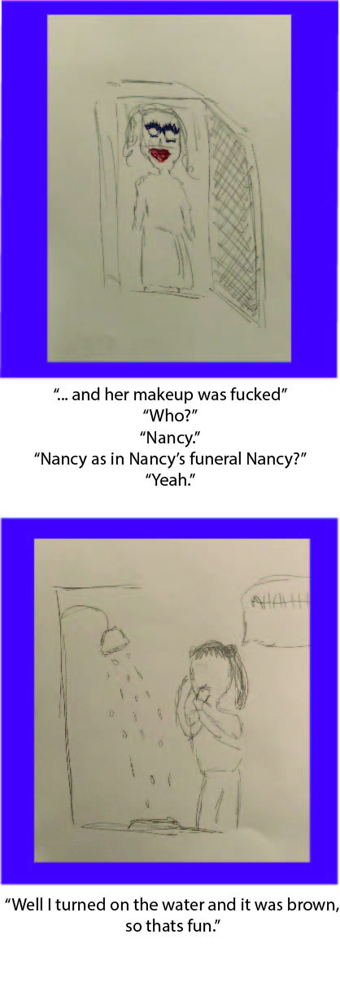
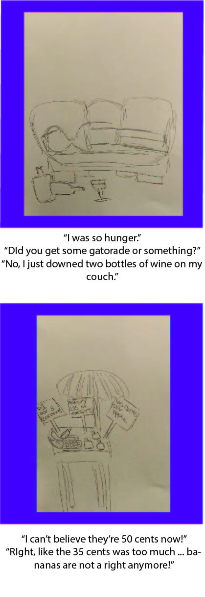
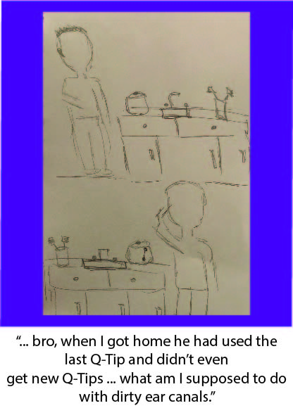

To explore creating five works based on the same topic in five days I chose two create two
parameters in which to create on work a day.
These parameters were, ease drop on a strangers conversation and then create a drawing of a portion of the conversation in under 1 minute.
I found that doing this forced me to pay attention to the people around me.
Most of the time when I am walking around I am listening to music and not paying attention to what the people around me are doing.
Forcing myself to pay attention to the strangers around me pushed me out of my confort zone
and I began paying more attention to my surrounding and the people I pass by everyday.
For the way I presented these images I wanted to create the same feeling that Overheard New York does.
This is an instagram account that posts overheard comments that people can submit
the pieces of conversation I chose were based on how funny/interesting/unique I thought they were
and I wanted to chose sections of conversation that other people would find interesting and funny as well.
Along with capturing funny conversations I wanted to gain perspective on the way people talk when they know they think no "outsiders" are listening.
I find that when I am talking and I know other people are in earshot I am more conscious of my word choice and the way I phrase thing,
by ease dropping on people my subjects were not aware of my listening and would not be slightly compelled to curve their language or stop a conversation.



At the conclusion of the five days I found that the majority (4/5) of the conversations
I overheard were centered around someone else, not the person I was listening to.
This was interesting to me because I felt that as I was including myself in these random strangers lives
I was also being included into the persons life they were talking about.